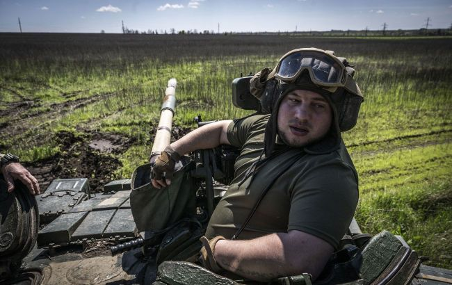

Ситуація на фронті сьогодні 6 вересня
Сили оборони України продовжують ведення наступальної операції на Мелітопольському напрямку. Протягом дня відбулось 26 бойових зіткнень. Про це повідомляє РБК-Україна з посиланням на Facebook Генерального штабу ЗСУ.
Ворожі атаки
Протягом доби ворог завдав 10 ракетних та 54 авіаційних удари по території України. Він здійснив 31 обстріл з реактивних систем залпового вогню по позиціях українських військ та населених пунктах. "Оперативна обстановка на сході та півдні України залишається складною. Відбулось 26 бойових зіткнень", - сказано у повідомленні.
- Оріхово-Василівка,
- Біла Гора,,
- Богданівка,
- Кліщіївка.
Наступ ЗСУ
Сили оборони України ведуть наступ на Мелітопольському напрямку, знищують ворога та крок за кроком звільнюють окуповані території."Протягом доби авіація Сил оборони завдала 12 ударів по районах зосередження особового складу, озброєння та військової техніки та по позиціях зенітно-ракетних комплексів противника", - пише Генштаб.